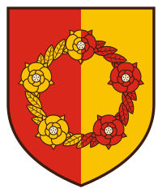
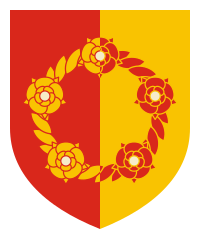
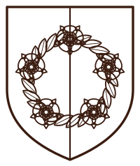
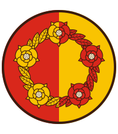
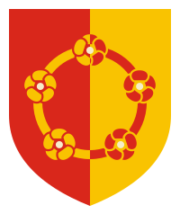

Blazon: Per pale gules and or, a wreath set with five roses counterchanged.
Redrawn from the description and the illustration on
roskildehistorie.dk.
Pick one, then tell me which and I will wire it into the site.

HeraldicClosest to the source drawing. Veined leaves, barbed and seeded roses.arms-heraldic.svg

FlatNo dark outline. Each shape is edged in the opposite tincture.arms-flat.svg

LineOne colour. Inline it in HTML and it takes the surrounding text colour. Loaded as an <img> like here, it falls back to dark ink — which is why it disappears on black below.arms-line.svg

RoundelThe same wreath in a circle. Avatars and stamps.arms-roundel.svg

MinimalRoses reduced to rosettes on a plain ring. Holds up small.arms-minimal.svgFaviconWreath reduced to a ring. The only one legible at 16px.arms-favicon.svgIcon tileThe reduced mark on a solid square. Source for the iOS and manifest icons.arms-icon.svg